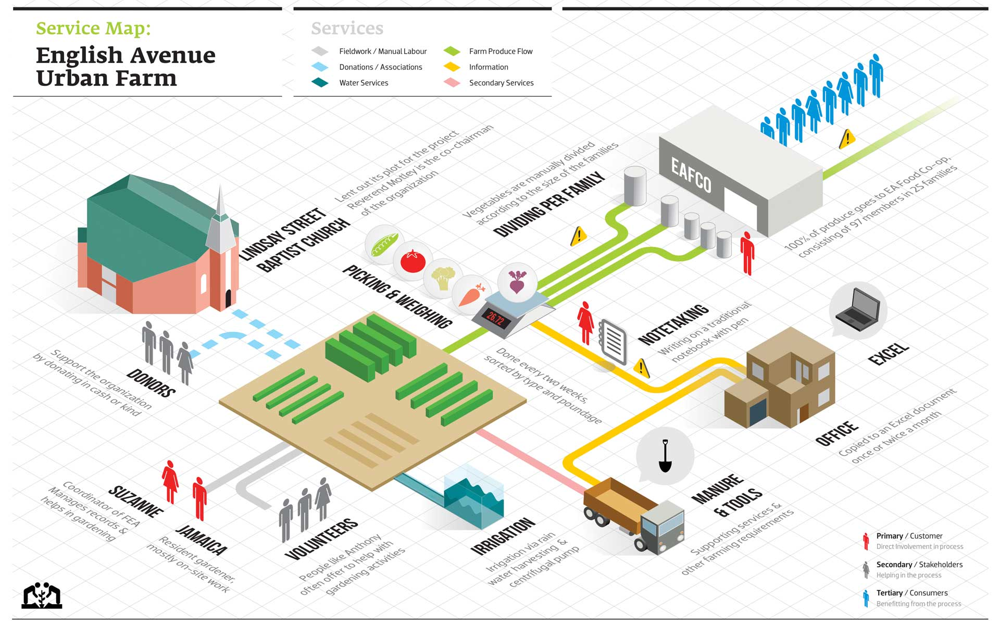
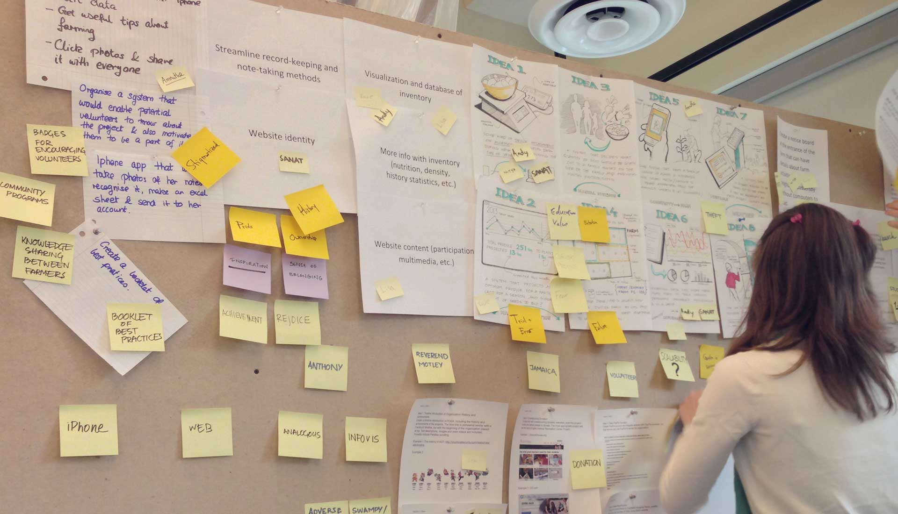
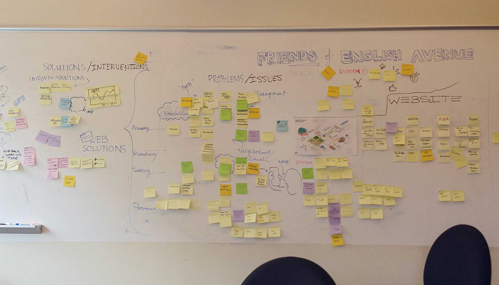
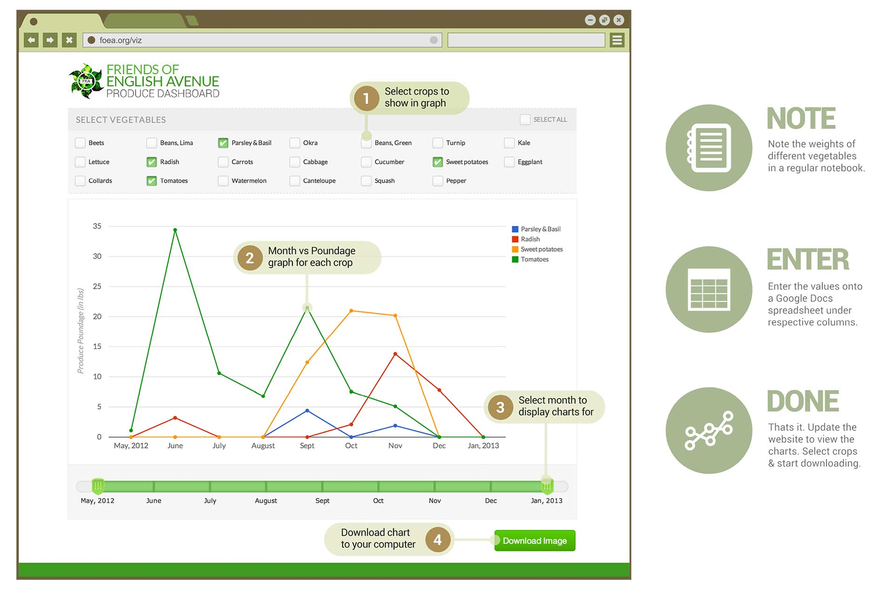

Friends of English Avenue urban farm
Digital design for an NGO run community garden.

About
Friends of English Avenue is a non profit organization that assists the English Avenue neighborhood of Atlanta through focus on crime reduction and establishing green spaces. It runs a small community garden in a space provided by the church.
Objective
The Public design workshop at Georgia Tech took up the challenge to help this farm grow by providing necessary digital tools in order to organize data, visualize production, and publicize itself.
Ethnography & Service Design
- 
-

Field Study
We started by conducting a field study at the Urban Farm at English Avenue. We talked to Suzzane, the field officer and Jamaica, the farmer; and learnt about the process of produce farming, logistics and distribution.
Service Map
I created a system map overviewing the entire operation process with the farm, church and the stakeholders. This helped us to visualize the pain points that needed to be addressed over the course of the semester.
Ideation
- 
- 
-

Design Directions
Based on affinity diagrams and individual brainstormings, we decided to go in three broad directions
- 1. Social: Compelling stories to make people love the farm.
- 2. Statistical: Charts to analyze the past and predict the future.
- 3. Supplemental: Infographics to create awareness beyond English Avenue.
Team formation
The eight of us split into three teams to tackle each of the issues. I, with another teammate, went on to design and implement a statistical tool that could visualize the produce data from conventional data entry methods currently used by Suzzane, such as Microsoft Excel.
This tool needed to be easy to use, fast and automatic and could have multiple input sources.
Final Design

Final Design
After rounds of meetings and feedbacks, we came up with a completely automated system that allows Suzzane to input data into a Google spreadsheet via a form and get data visualized in another URL, from where she can download an use it for her reports.
Response from users
Because the design was so simple and easy to use, Jamaica, the farmer could now input data into the system in Suzzane's absence. Further, Suzzance can now use her iPhone to add poundage as soon as they are weighed. In Suzzane'e words, it's like 'magic'.